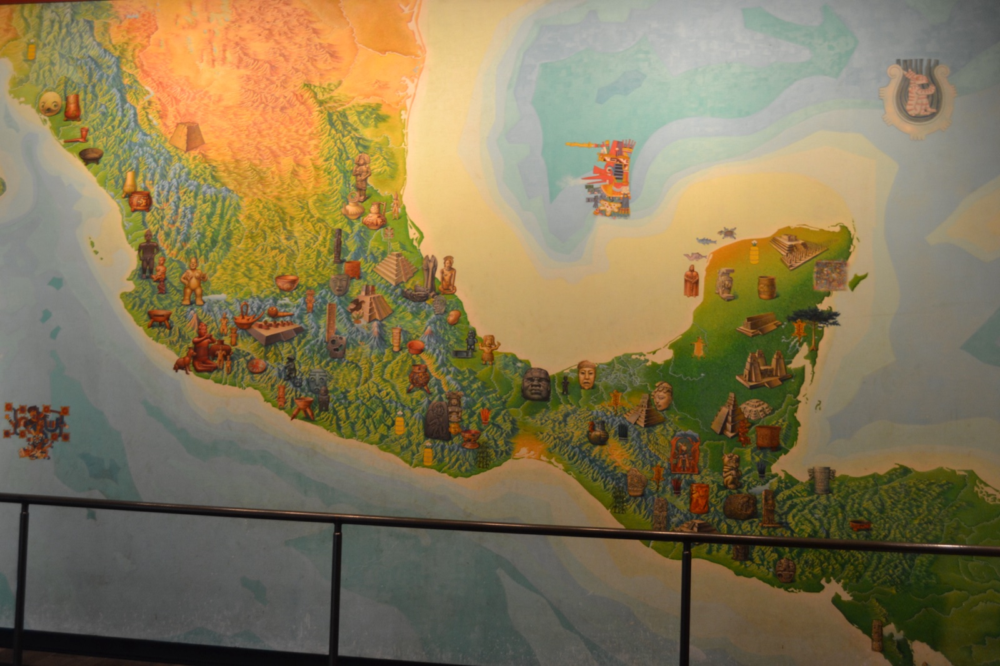
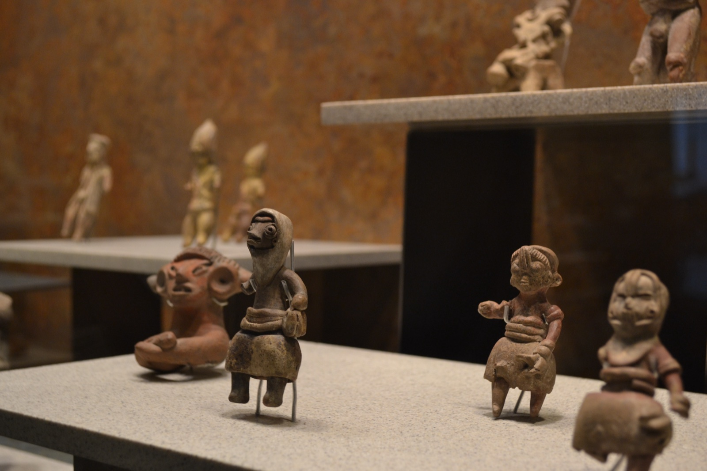
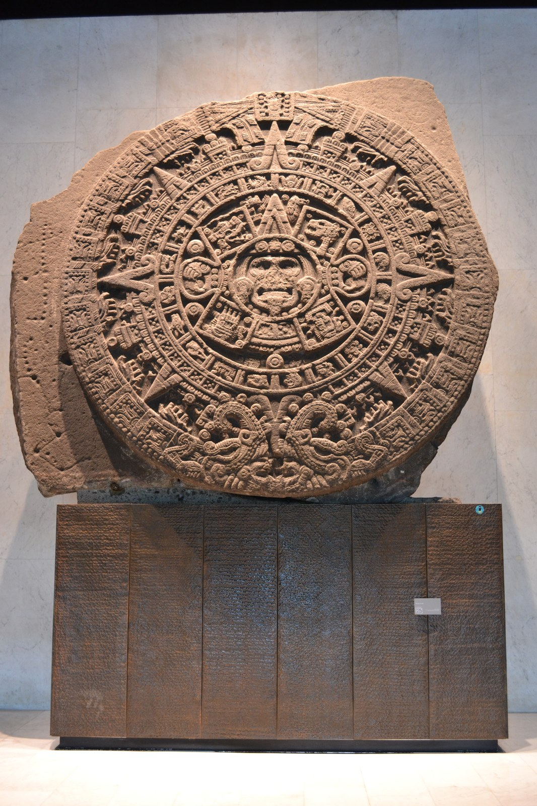
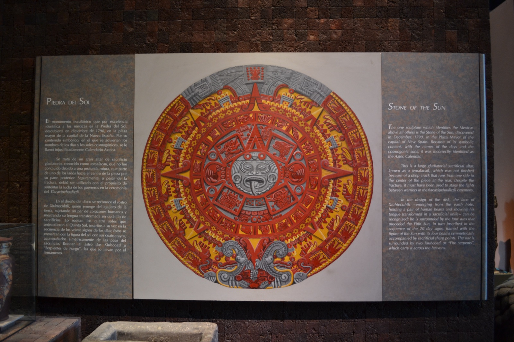
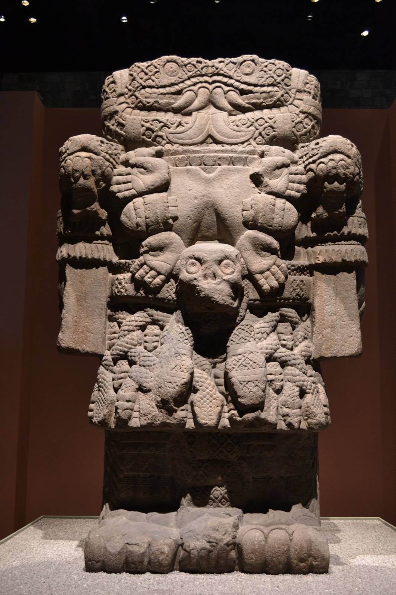
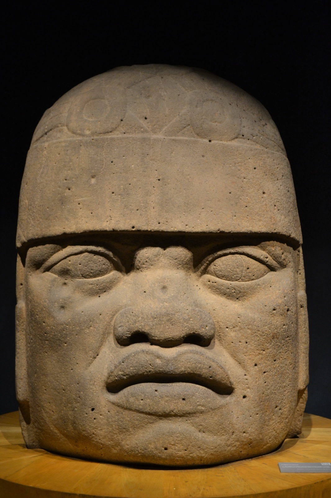
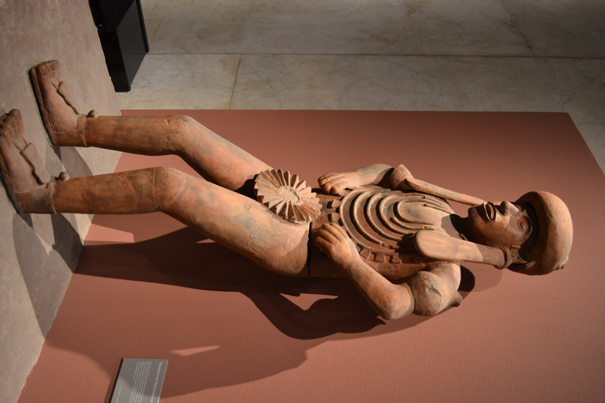

Junio de 2015. Unas tres horas de vuelo desde Costa Rica. Aprovechando un periodo largo de descanso, viajé por primera vez a México. La Ciudad de México, donde aterricé, está a 2.240 m sobre el nivel del mar: una metrópoli enorme con el aire delgado de las tierras altas. Vista desde Centroamérica puede parecer "el país hispanohablante de al lado", pero la densidad de su civilización es de otro orden de magnitud. Con esa intuición, lo primero que hice el primer día fue ir al Museo Nacional de Antropología.
Ubicado en un rincón del Bosque de Chapultepec, es prácticamente la encarnación del orgullo nacional mexicano. Cubre desde la Mesoamérica antigua hasta las culturas indígenas de todo el país, y suele figurar entre los mejores museos del mundo.

Una concentración abrumadora de antigüedad
La calidad y la cantidad de las piezas son enormes. Aztecas, mayas, olmecas, teotihuacanos, zapotecas, toltecas — civilizaciones cuyos nombres uno solo conoce de los libros de texto se alinean aquí en piezas reales, separadas por una sola lámina de cristal. "Ver el original" se queda corto: el aire mismo se siente más denso.


La Piedra del Sol — el calendario circular azteca
La pieza emblemática del museo es la Piedra del Sol. Un monolito único de 3,6 m de diámetro y 24 toneladas de peso, en el que está tallada toda una cosmología azteca. En el centro está el dios solar Tonatiuh, rodeado por los cuatro soles anteriores (las eras pasadas) y el símbolo del actual quinto sol. Más afuera, los veinte nombres de los días, y en el borde más externo, dos serpientes que envuelven el universo: la estructura del mundo entero condensada en una sola piedra. Una pieza extraordinaria.


Me dejó tal impresión que más tarde, en una tienda de souvenirs de la Península de Yucatán, no dudé en comprar un imán de nevera con una miniatura de la Piedra del Sol. Sigue pegado en mi nevera hasta hoy.
Coatlicue y las cabezas colosales olmecas
Junto con la Piedra del Sol, las piezas que más impactan son la estatua de Coatlicue y las cabezas colosales olmecas.
Coatlicue es la diosa madre tierra de los aztecas. Su cabeza está formada por dos cabezas de serpiente unidas, su collar está hecho de corazones humanos y manos cortadas, y su cinturón es de cráneos. Una visión antigua de la vida y la muerte esculpida sin filtros: una figura que abruma con solo estar frente a ella.
Las cabezas colosales olmecas, por su parte, fueron dejadas por la civilización más antigua de México: los olmecas (aprox. 1500–400 a. C.). Hace más de 3.000 años, alguien talló una cabeza humana ampliada a unos 2 m de altura en un solo bloque de piedra. Narices anchas, labios gruesos, una especie de casco — rasgos que algunos han leído como africanos, alimentando un debate sobre intercambios culturales antiguos que continúa hasta hoy.


Cráneos y deidades de la muerte — la visión mexicana de la mortalidad
Hay un motivo que se repite en las salas: el cráneo. Cráneos como adorno, cráneos como dioses, cráneos como frontera entre la vida y la muerte. La sensibilidad que hoy reconocemos en el Día de los Muertos ya estaba presente en la Mesoamérica antigua.
Un ejemplo claro es la pieza relacionada con Mictlantecuhtli, el señor del inframundo en la mitología mexica. El museo conserva una figura de barro de tamaño natural: un sacerdote al servicio del dios de la muerte, vestido con la indumentaria y los emblemas de Mictlantecuhtli. Más que una representación del dios mismo, se interpreta como una figura humana que encarna la deidad de la muerte en un contexto ritual. No es un esqueleto literal, pero la postura rígida y los adornos distintivos transmiten todo el mundo ritual mexica construido alrededor de la muerte.

Para una representación aún más explícitamente esquelética de Mictlantecuhtli, el Museo del Templo Mayor tiene una pieza que aparece en Centro Histórico de la Ciudad de México: Zócalo, Templo Mayor y Catedral — Recorrido por México #1.
La muerte no como miedo o tabú, sino como algo que vive justo al lado de la vida — esa estética parece un hilo único que va desde los olmecas, hace 3.000 años, hasta el México católico de hoy.
El primer día en la Ciudad de México, este museo me golpeó con todo el "espesor" de México de una sola vez. A partir de ahí, cada calle que caminaría y cada sitio que visitaría se sentiría como una extensión de lo que vi en estas salas — el lugar perfecto para empezar un viaje.